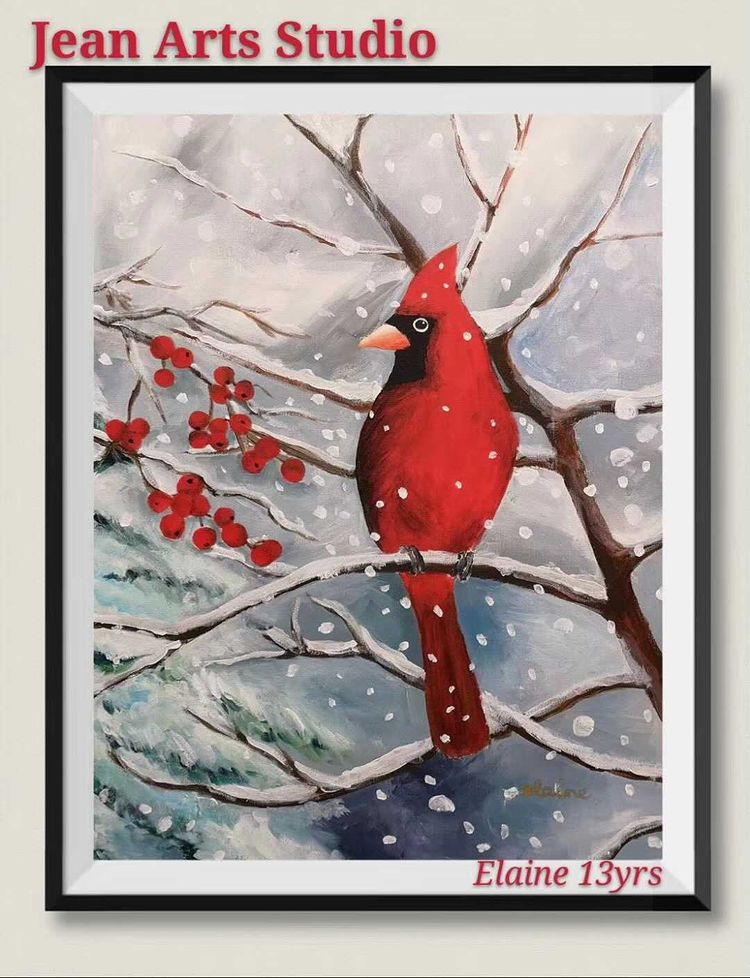
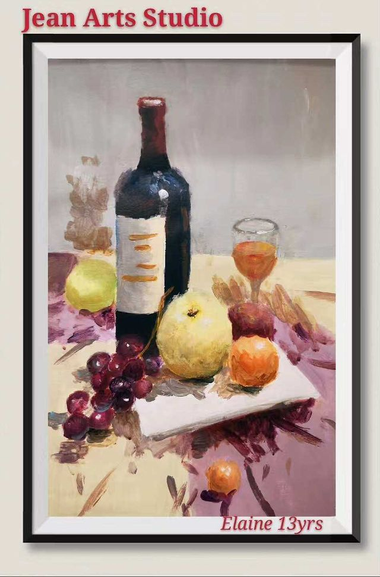
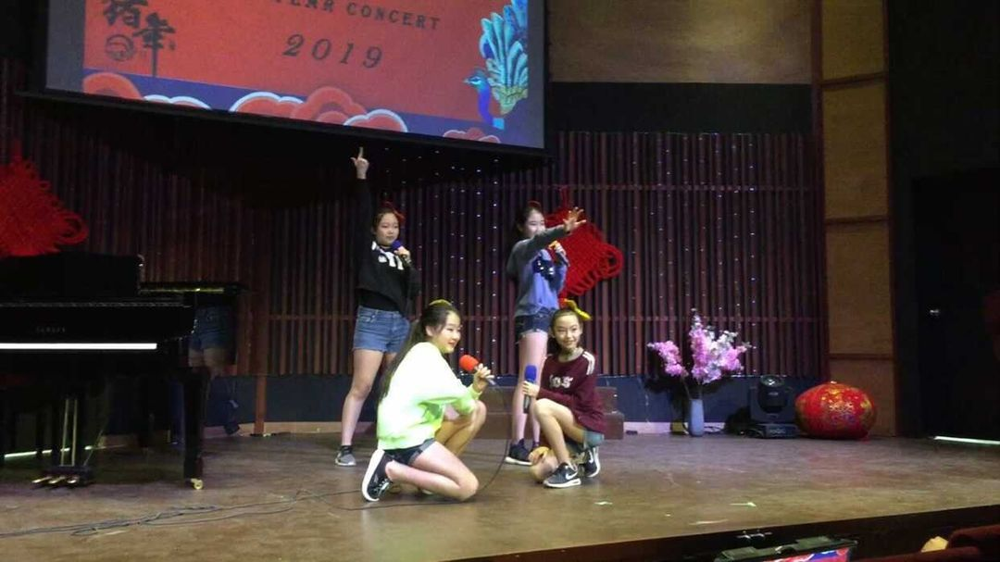
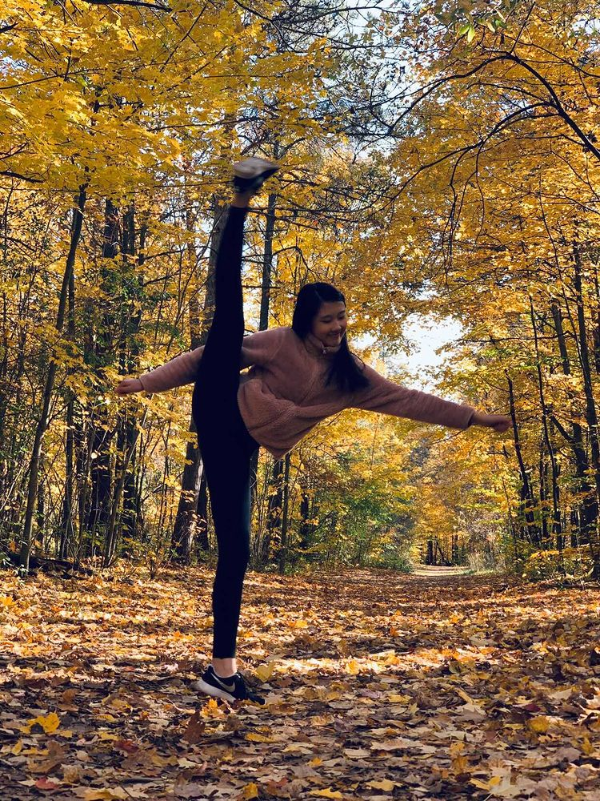
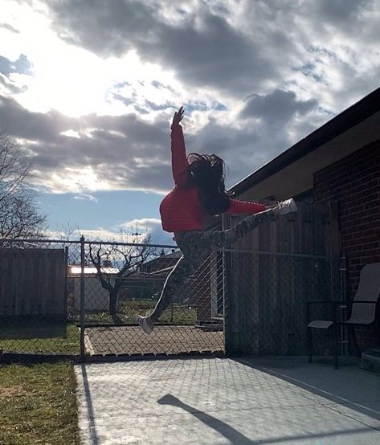

Extracurriculars That I Take
The extracurriculars I take now include Math, English, French and Piano but I used to take a lot more such as Art, Singing, Table Tennis, Dancing and Chinese School.
Favourites
Art
One of my favourite extracurriculars is art because I get to express my ideas by drawing or painting the artwork in my way.


Singing
Another extracurricular I enjoy is singing. I take singing classes with my sister and my friend and some times we get to perform together during concerts.

Dancing
I also enjoy dancing because it is another way to express myself with movements. I also like to showcase my skills and let everyone see my improvements.

